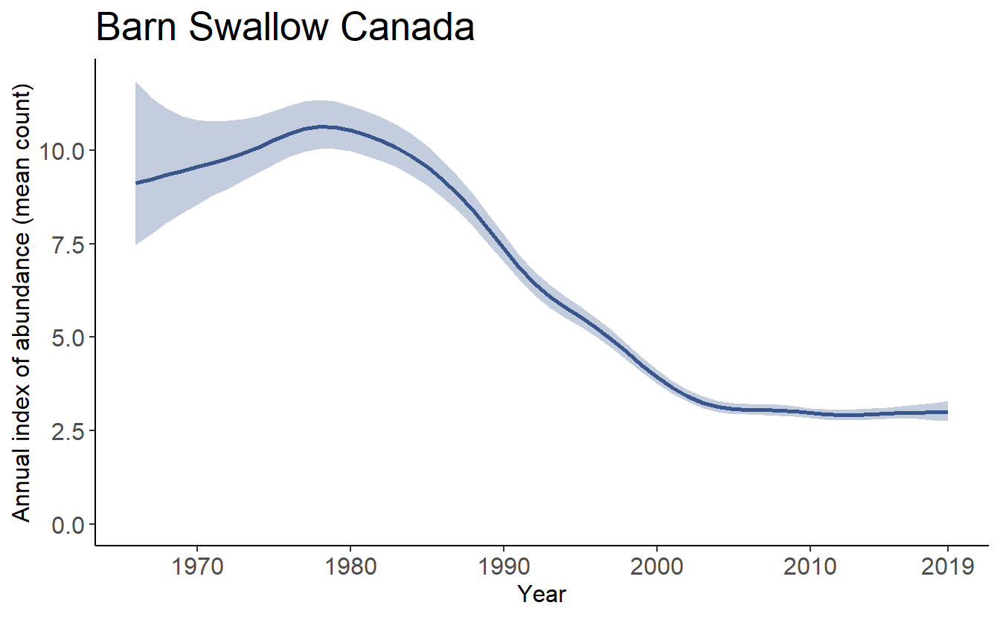

Chapter 6 Estimating Annual Indices and Trends
Once the model has finished running, we can use the saved output to calculate the population trajectories and trends. As an example, we’ll load some saved model output for Barn Swallow, from the gamye model. If you haven’t already, you can download the model output file here, then save it into your working directory.
This saved workspace includes two objects:
jags_data - the data object created with the
prepare_jags_data()function.jags_mod - the model output created with the
run_model()function.
load("data/gamye_Barn_Swallow/jags_mod_full.RData")6.1 Annual Indices
The annual indices of relative abundance (“annual indices”) from all of the bbsBayes models represent the expected mean count on the BBS routes in a given region and year. The time-series of these annual indices in a given region make up the estimated population trajectory.
indices <- generate_indices(jags_mod = jags_mod,
jags_data = jags_data)
## Note: this function can take ~20 minutes to run for a species with a broad range (many strata) and if the model run included a long time-series (many years).By default, this function generates estimates for the continent (i.e., survey-wide) and for the individual strata. However, if using one of the two BBS stratifications “bbs_usgs” or “bbs_cws,” the user can also select summaries for composite regions (regions made up of collections of strata), such as countries, provinces/states, Bird Conservation Regions, etc.
indices <- generate_indices(jags_mod = jags_mod,
jags_data = jags_data,
regions = c("continental",
"national",
"prov_state",
"stratum"))
#also "bcr", #BCR specific estimates
# "bcr_by_country" #e.g., splits the BCRs along the national bordersThe generate_indices() function creates a list that includes an object called data_summary, which is a dataframe with all of the estimated annual indices indices$data_summary.
knitr::kable(head(indices$data_summary[,c(1,2,4,7,8,13,14,15,16)]))| Year | Region | Region_type | Index | Index_q_0.025 | Index_q_0.975 | obs_mean | nrts | nnzero |
|---|---|---|---|---|---|---|---|---|
| 1966 | Continental | continental | 9.48 | 8.64 | 10.8 | 2.36 | 396 | 338 |
| 1967 | Continental | continental | 9.78 | 9.05 | 10.8 | 4.87 | 814 | 670 |
| 1968 | Continental | continental | 10.23 | 9.59 | 11.1 | 7.64 | 869 | 711 |
| 1969 | Continental | continental | 10.66 | 10.10 | 11.4 | 8.75 | 1187 | 963 |
| 1970 | Continental | continental | 11.09 | 10.57 | 11.7 | 9.45 | 1276 | 1047 |
| 1971 | Continental | continental | 11.36 | 10.89 | 11.9 | 9.84 | 1368 | 1158 |
For example, one may wish to export the annual indices to a text file that can be read using Microsoft Excel.
write.csv(indices$data_summary, "Barn_Swallow_trajectories.csv")The list also includes a number of other objects that retain the stratification information, strata area weights, and the full posterior samples for every estimated annual index. Generally these other objects are only used by subsequent functions and the user won’t access them directly.
The function also accepts the alternative annual indices, such as the smooth-only indices from the gamye model.
indices_smooth <- generate_indices(jags_mod = jags_mod,
jags_data = jags_data,
alternate_n = "n3",
regions = c("continental",
"national",
"prov_state",
"stratum"))
#also "bcr", #BCR specific estimates
# "bcr_by_country" #e.g., splits the BCRs along the national borders6.2 Population Trends
Population trends can be calculated from the output of generate_indices(). The trends are expressed as geometric mean rates of change (%/year) between two points in time. \(Trend = 100*((\frac {n[Maxyear]}{n[Minyear]})^\frac {1}{(Maxyear-Minyear)}{)-1)}\)
trends <- generate_trends(indices = indices,
Min_year = 1970,
Max_year = 2019)The generate_trends() function returns a dataframe with 1 row for each unit of the region-types requested (i.e., 1 row for each stratum, 1 continental, etc.). The dataframe has at least 27 columns that report useful information related to each trend, including the start and end year of the trend, lists of included strata, total number of routes, number of strata, mean observed counts, and estimates of the % change in the population between the start and end years.
knitr::kable(head(trends[,c(1,3,8,9,14)]))| Start_year | Region | Trend | Trend_Q0.025 | Trend_Q0.975 |
|---|---|---|---|---|
| 1970 | Continental | -0.816 | -0.941 | -0.699 |
| 1970 | CA | -2.419 | -2.736 | -2.115 |
| 1970 | US | -0.314 | -0.427 | -0.213 |
| 1970 | AB | -1.961 | -2.723 | -1.257 |
| 1970 | AK | -5.451 | -8.247 | -2.611 |
| 1970 | AL | 2.439 | 1.805 | 3.053 |
The generate_trends function includes some other arguments that allow the user to adjust the quantiles used to summarize uncertainty (e.g., interquartile range of the trend estiamtes, or the 67% CIs), as well as include additional calculations, such as the probability a population has declined (or increased) by > X%.
trends_10 <- generate_trends(indices = indices,
Min_year = 2009,
Max_year = 2019,
prob_decrease = c(30,50),
prob_increase = c(0))knitr::kable(head(trends[,c(1,4,8,15,22)]))| Start_year | Region_alt | Trend | Percent_Change | Relative_Abundance |
|---|---|---|---|---|
| 1970 | Continental | -0.816 | -33.1 | 10.95 |
| 1970 | Canada | -2.419 | -69.9 | 6.35 |
| 1970 | United States of America | -0.314 | -14.3 | 13.85 |
| 1970 | Alberta | -1.961 | -62.1 | 6.72 |
| 1970 | ALASKA | -5.451 | -93.6 | 1.94 |
| 1970 | ALABAMA | 2.439 | 225.7 | 18.58 |
And trends calculated from the smooth component can be derived from the related annual indices.
trends_smooth <- generate_trends(indices = indices_smooth,
Min_year = 1970,
Max_year = 2019,
prob_decrease = c(30,50),
prob_increase = c(0))
trends_smooth_10 <- generate_trends(indices = indices_smooth,
Min_year = 2009,
Max_year = 2019,
prob_decrease = c(30,50),
prob_increase = c(0))6.3 Alternative time-spans for trends
It is simple to estimate trends for alternative intervals of time. For example, calculating a 15 year trend for Barn Swallow.
trends_smooth_15 <- generate_trends(indices = indices_smooth,
Min_year = (2019-15),
Max_year = 2019,
prob_decrease = c(30,50),
prob_increase = c(0)) Or, a 15-year trend for the previous 15 years, i.e., the interval from 1989-2004:
trends_smooth_15alt <- generate_trends(indices = indices_smooth,
Min_year = 1989,
Max_year = 2004,
prob_decrease = c(30,50),
prob_increase = c(0))6.4 Alternative definitions of trends
The end-point trend definition introduced by (Link and Sauer 2002b) is only one possible metric to measure a population trend. The default trend calculation is an interval-specific estimate of the geometric mean annual change in the population. \(Trend = 100*((\frac {n[Maxyear]}{n[Minyear]})^\frac {1}{(Maxyear-Minyear)}{)-1)}\) It relies on a comparison of the annual indices in the first and last years of the trend period to quantify the mean rate of population change. However, it ignores the pattern of change between the two end-points.
The user can choose an alternative estimate of change that is calculated by fitting a log-linear slope to the series of all annual indices between the two end-points (e.g., all 11 years in a 10-year trend from 2008-2018). The slope of this line could be expressed as an average annual percent change across the time-period of interest. If working with estimates derived from a model with strong annual fluctuations and for which no decomposition is possible (e.g., “firstdiff” model), this slope-based trend may be a more comprehensive measure of the average population change, that is less dependent on the particular end-point years. These slope trends can be added to the trend output table by setting the slope = TRUE argument in generate_trends(). The standard trends are still calculated, but additional columns are added that include the alternate estimates. NOTE: the generate_map() function can map slope trends as well with the same slope = TRUE argument.
For example, we could use the full annual indices from the gamye model (indices including the annual fluctuations) to calculate both the default end-point trends and the alternative slope trends.
trends_15_slope <- generate_trends(indices = indices,
Min_year = (2019-15),
slope = TRUE,
Max_year = 2019,
prob_decrease = c(30,50),
prob_increase = c(0))Setting slope = TRUE adds the slope-trend calculation to the output dataframe. Note: The probabilities of decrease and increase values are not based on the slope metric, they are always a function of the difference in population between the start and end of the time-interval.
knitr::kable(head(trends_15_slope[,c(1,4,8,22)]))| Start_year | Region_alt | Trend | Slope_Trend |
|---|---|---|---|
| 2004 | Continental | -1.262 | -1.282 |
| 2004 | Canada | -0.524 | -0.274 |
| 2004 | United States of America | -1.386 | -1.443 |
| 2004 | Alberta | -1.832 | -1.750 |
| 2004 | ALASKA | -4.449 | -4.828 |
| 2004 | ALABAMA | -2.652 | -2.414 |
6.4.1 Percent Change and probability of change
The generate_trends() function also produces estimates of the overall percent-change in the population between the first and last years of the trend-period. This calculation is often easier to interpret than an average annual rate of change. These percent change estimates have associated uncertainty bounds, and so can be helpful for deriving statements such as “between 2008 and 2018, the population has declined by 20 percent, but that estimate is relatively uncertain and the true decline may be as little as 2 percent or as much as 50 percent”
In addition, the function can optionally calculate the posterior conditional probability that a population has changed by at least a certain amount, using the prob_decrease and prob_increase arguments. These values can be useful for deriving statements such as “our model suggests that there is a 95% probability that the species has increased (i.e., > 0% increase) and a 45 percent probability that the species has increased more than 2-fold (i.e., > 100% increase)”
knitr::kable(head(trends_smooth_15[,c(1,4,8,15,22)]))| Start_year | Region_alt | Trend | Percent_Change | prob_decrease_30_percent |
|---|---|---|---|---|
| 2004 | Continental | -1.119 | -15.53 | 0.000 |
| 2004 | Canada | -0.315 | -4.62 | 0.000 |
| 2004 | United States of America | -1.255 | -17.26 | 0.000 |
| 2004 | Alberta | -1.854 | -24.47 | 0.246 |
| 2004 | ALASKA | -4.551 | -50.28 | 0.806 |
| 2004 | ALABAMA | -2.481 | -31.40 | 0.597 |
6.5 Changing trends through time
Changes in populations, both annual rates of change (trends) and overall changes in populations (percent change), are often used to prioritize species in conservation assessments. For example, the International Union for the Conservation of Nature (IUCN) or the Committee on the Status of Endangered Wildlife in Canada (COSEWIC) use estimates of population change over three generations to classify species as Endangered or Threatened. Of course the estimate of population trend used to classify a species is at least partly dependent on the year in which the species is assessed. Populations rarely follow constant rates of log-linear change through time, and so estimates of change also change through time. To quantify and visualize these changes in trends, one can estimate a series of trends for a rolling window of time-intervals. As an example, the annual CWS analysis includes an estimate of all possible 10-year trends for each species, which we refer to as the rolling trends analysis. Conceptually, it is relatively simple, and just involves estimating the annual indices for the full time-series of the survey, and then embedding the generate_trends() function within a loop.
library(tidyverse)
indices_smooth_national <- generate_indices(jags_mod = jags_mod,
jags_data = jags_data,
alternate_n = "n3", # the smooth only component of the gamye model
regions = c("continental",
"national")) #only continental and national estimates
first_year <- min(indices_smooth_national$data_summary$Year) #First year in the time-series
last_year <- max(indices_smooth_national$data_summary$Year) #Last year in the time-series
trend_time <- 10 #use 10-year trends
trends_out <- NULL
for(Y in first_year:(last_year-trend_time)){
trends_temp <- generate_trends(indices = indices_smooth_national,
Min_year = Y,
Max_year = Y+trend_time,
prob_decrease = c(30,50),
prob_increase = c(0))
trends_out = rbind(trends_out,trends_temp)
}
knitr::kable(head(trends_out[,c(1,2,4,8,22)]))| Start_year | End_year | Region_alt | Trend | prob_decrease_30_percent |
|---|---|---|---|---|
| 1966 | 1976 | Continental | 3.54 | 0.000 |
| 1966 | 1976 | Canada | 1.36 | 0.002 |
| 1966 | 1976 | United States of America | 4.72 | 0.000 |
| 1967 | 1977 | Continental | 3.42 | 0.000 |
| 1967 | 1977 | Canada | 1.40 | 0.001 |
| 1967 | 1977 | United States of America | 4.47 | 0.000 |
Now the trends_out object is a dataframe with all of the trend estimates, which we could export to a file or use to plot the estimated trends through time.
library(ggrepel) #handy ggplot labeling extension
library(RColorBrewer) #handy colour palettes
c_orng = RColorBrewer::brewer.pal(9,"Set1")[5]
c_red = RColorBrewer::brewer.pal(9,"Set1")[1]
c_blue = RColorBrewer::brewer.pal(9,"Set1")[2]
# selecting just the trends for Canada
trends_canada = trends_out[which(trends_out$Region_alt == "Canada"),]
# adding column names to identify which credible intervals to plot below
# also adding labels that are ggplot friendly (they do not include ".")
trends_canada$lci = trends_canada$Trend_Q0.025
trends_canada$uci = trends_canada$Trend_Q0.975
# pulling out one row of the data frame to help annotate the plot
trends_canadaend4 = trends_canada[nrow(trends_canada)-4,]
trends_canadaend4$lab50 = "50% CI"
trends_canadaend4$lab95 = "95% CI"
trends_canadaend = trends_canada[nrow(trends_canada),]
pth_30_labs = paste0(signif(100*trends_canadaend[,"prob_decrease_30_percent"],2),"% probability of 30% decrease")
pth_50_labs = paste0(signif(100*trends_canadaend[,"prob_decrease_50_percent"],2),"% probability of 50% decrease")
trends_canadaend$pdec = paste(signif(trends_canadaend[,"Percent_Change"],2),"% Change over",trend_time,"years")
# a few extra objects to further annotate the plot
thresh30 = (0.7^(1/trend_time)-1)*100 # threshold trend value for a 30% decline over 10-years
thresh50 = (0.5^(1/trend_time)-1)*100 # threshold trend value for a 50% decline over 10-years
threshs = data.frame(thresh = c(thresh30,thresh50),
p_thresh = c(paste("-30% over",trend_time,"years"),
paste("-50% over",trend_time,"years")),
Year = rep(min(trends_canada$End_year),2))
cpt = ggplot(data = trends_canada,aes(x = End_year,y = Trend))+
theme_minimal()+
labs(title = paste("Barn Swallow rolling",trend_time,"year trends for Canada"),
subtitle = paste("Based on Trend in",last_year,":",pth_30_labs,"and",pth_50_labs))+
xlab(paste("Ending year of",trend_time,"trend"))+
ylab(paste(trend_time,"year trends"))+
geom_hline(yintercept = thresh30,colour = c_orng)+
geom_hline(yintercept = thresh50,colour = c_red)+
geom_hline(yintercept = 0,colour = grey(0.5))+
geom_label_repel(data = threshs,aes(x = Year,y = thresh,label = p_thresh),position = "nudge")+
geom_pointrange(aes(x = End_year,y = Trend,ymin = lci,ymax = uci),colour = c_blue)+
geom_text_repel(data = trends_canadaend,aes(x = End_year,y = Trend,label = pdec),min.segment.length = 0.1,nudge_y = 0.95)
print(cpt)

And here’s the population trajectory for comparison. Note: the plot_indices() function that generated this plot is demonstrated in the next section 7.
